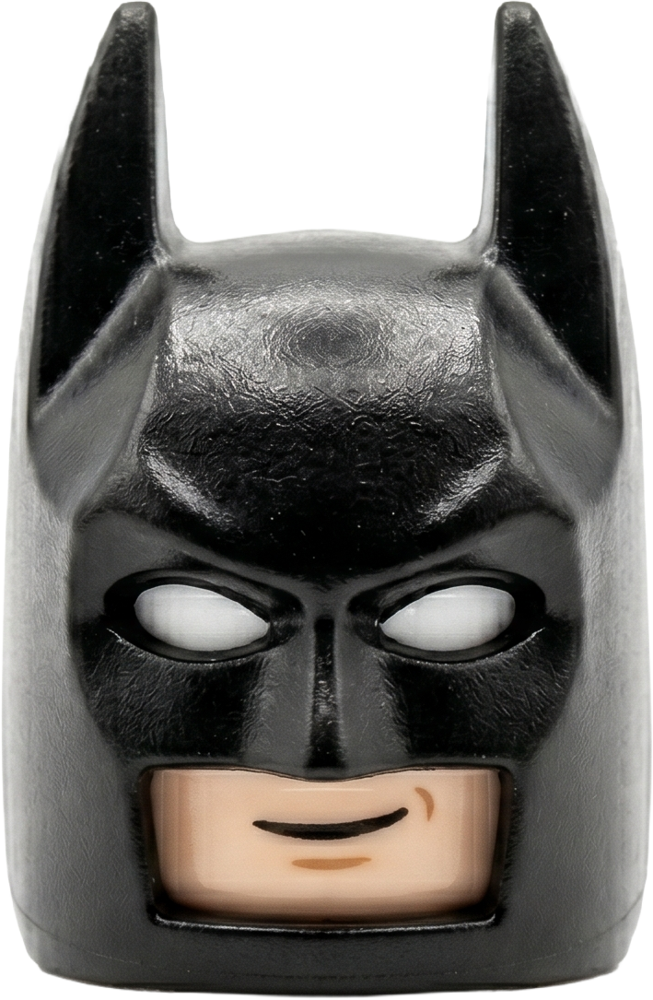
배트맨은 다스베이더를
떠올린다.
그 시꺼먼 녀석과는 스타일이 항상
겹쳐서 마음에 안 든단 말이지.
아하! 좋은 생각이 있어.


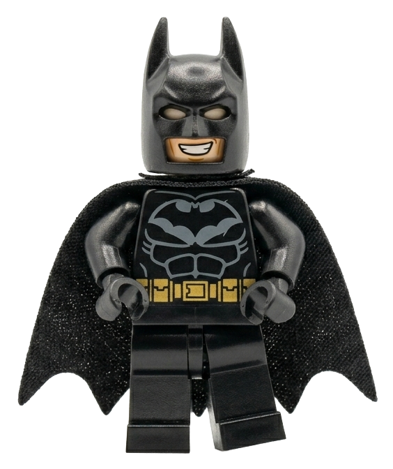
다스베이더에게는 광선검 색을 바꾸는
기계가 있다지. 근데 그 기계는
어떤 물건이든 색을 바꿀 수 있대.
그 기계를 훔쳐 녀석의
컬러를 바꿔버리겠어!
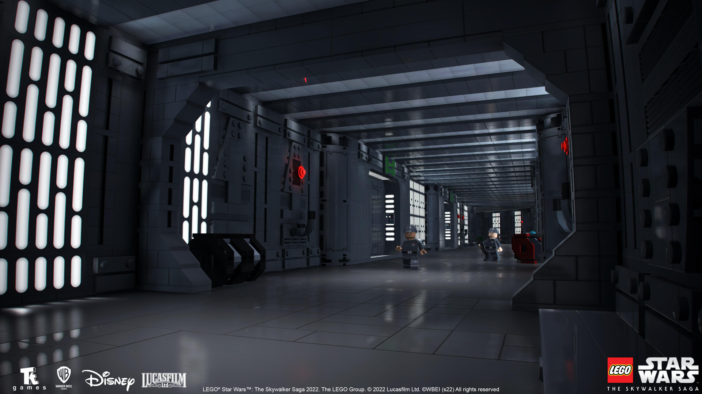

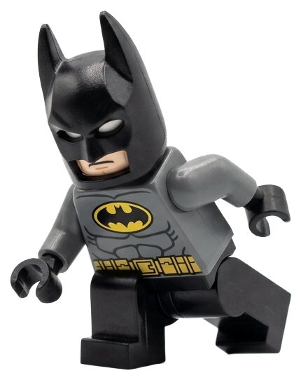


다스베이더의 우주선에
잠입한 배트맨.
내부가 너무 복잡한 탓에 안에서
길을 잃고 마는데.
여긴 어디지? 아니
아까 왔던 곳이잖아!
이대로는 발각되기 쉬우니
스톰트루퍼로 변장해야지.
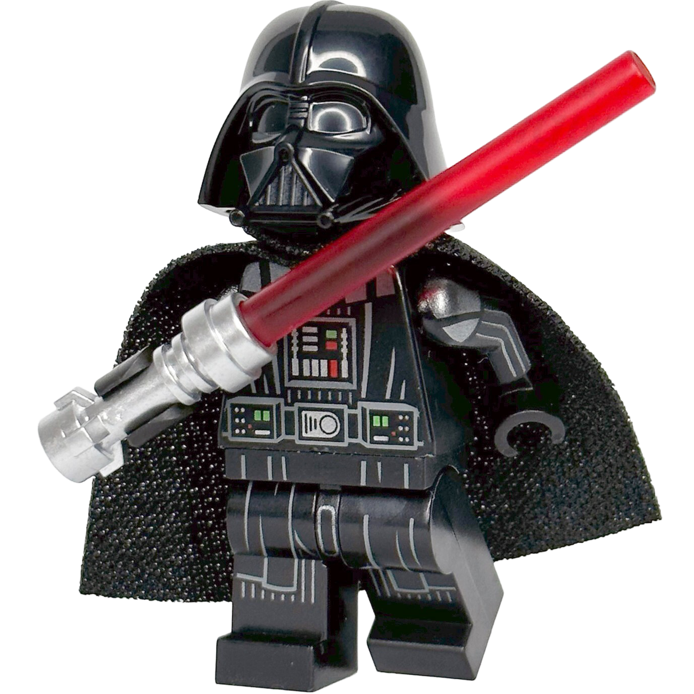

하지만 다스베이더를
마주치자 의심을 받게 된다.
자네는
어디 소속이지?
음, 그러니까...
배트맨은 대답을 하지 못하고
식은땀을 흘리는데.
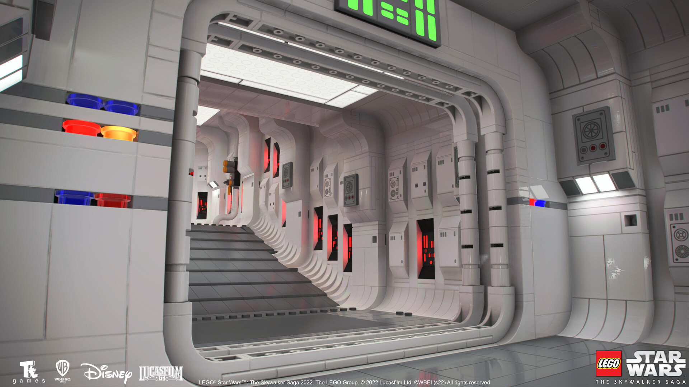
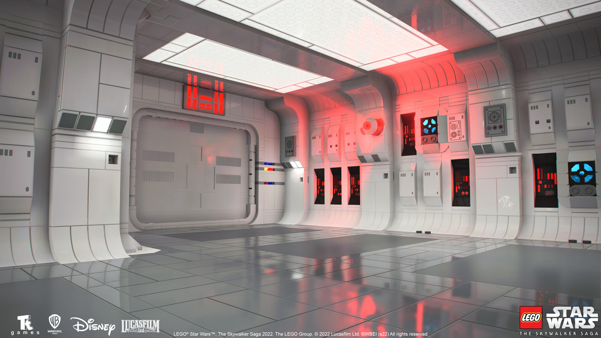
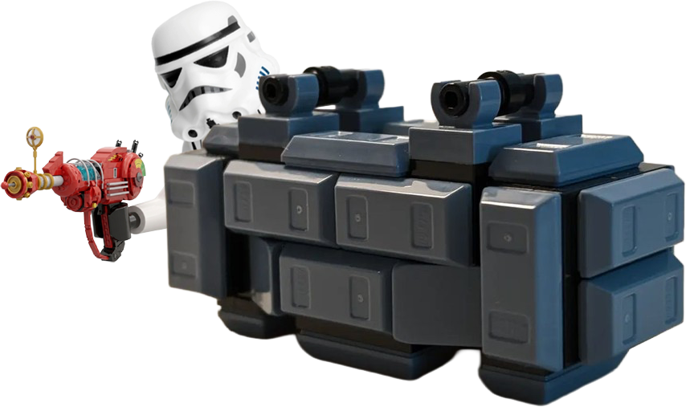

갑자기 저 뒤에 모습을
드러낸 다른 병사!
손에 염색 기계를 쥐고 나타나
멀리서 다스베이더를 겨냥한다.
무지개 빔이 다스베이더의
등에 와서 맞는다.
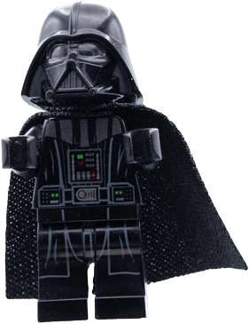

으억!
이건 또 뭐야?
화가 치민 다스베이더.
뚜껑이 열렸다.
그런데 화를 낼수록 핑크색으로
변하는 다스베이더.
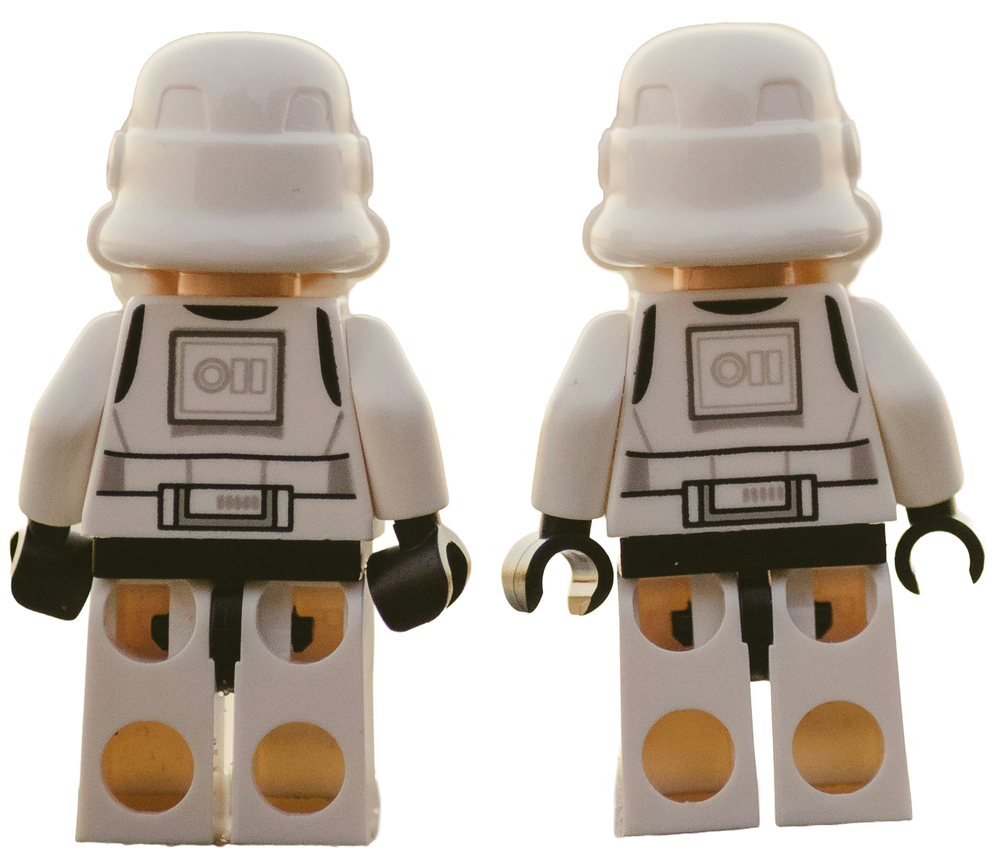
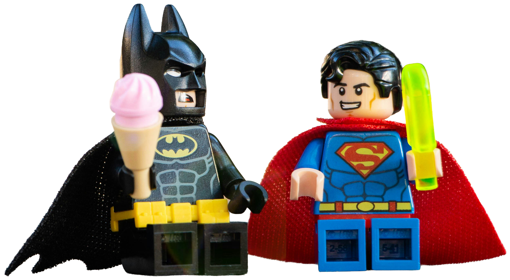
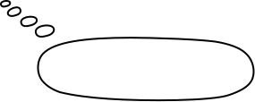
빔을 발사한 병사가
배트맨을 잡고 도망친다.
누군가 했더니 친구인 슈퍼맨.
배트맨은 안도의 한숨을 내쉰다.
다스베이더가 핑크로 변했으니
내 컬러랑 겹칠 일이 없겠군.
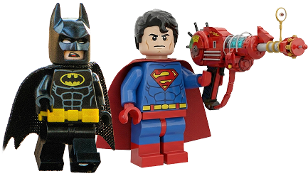
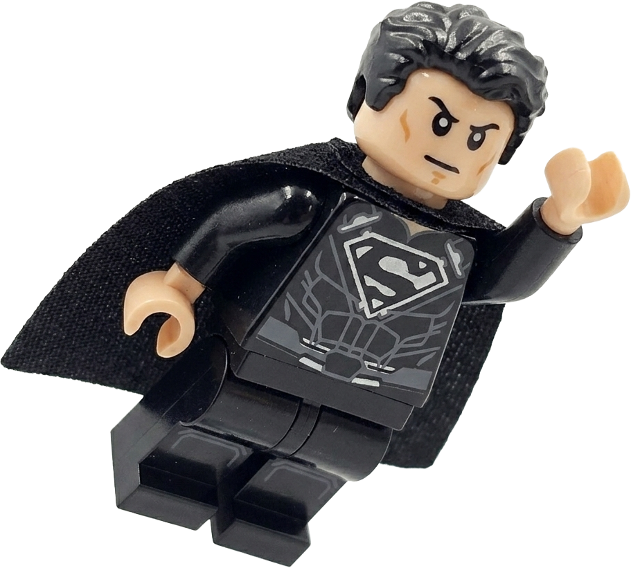
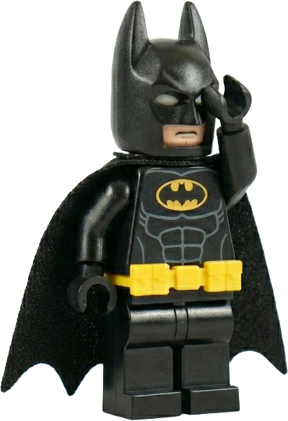

근데 여긴 어떻게 왔어? 왜 이
기계를 네가 가지고 있는 거야?
나도 이걸 찾으러 왔지.
요즘 검은 망토가 인기라길래!
검은색으로 변신하는 슈퍼맨.
히히.
또다른 경쟁자가 생겨버렸다.
한편, 다스베이더는.
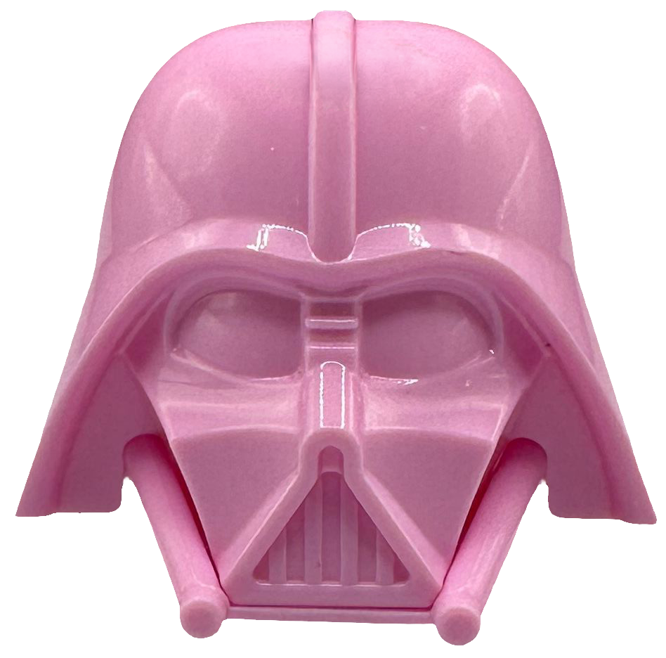